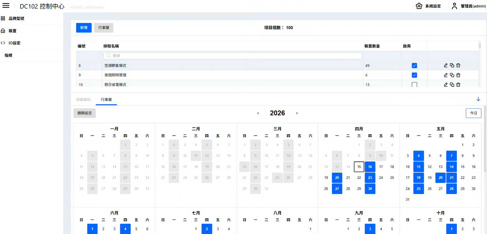
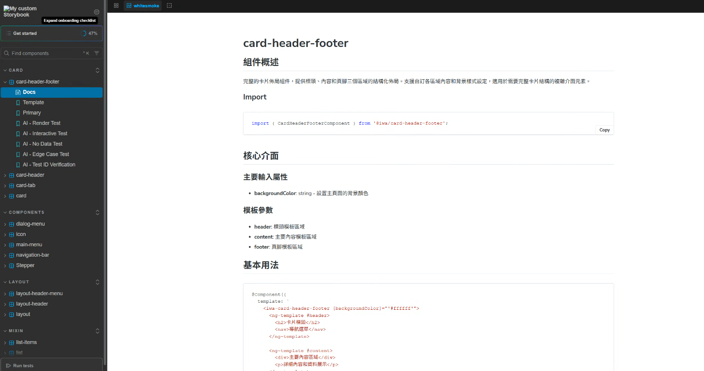
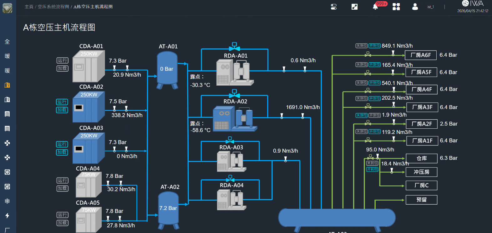

PHASE_01
2014 - 2016
政府專案全端開發
深耕 ASP.NET 與 MSSQL 架構，參與政府級資訊系統建置，建立穩定、合規且可維護的資料管理基礎。
- ASP.NET
- MSSQL
- C#
從政府資訊系統、前端工程化、IoT 即時平台，到現代 Angular 與 AI workflow，持續把技術棧轉化為穩定可交付的產品能力。
2014 - 2016
深耕 ASP.NET 與 MSSQL 架構，參與政府級資訊系統建置，建立穩定、合規且可維護的資料管理基礎。
2016 - 2018
轉向前端工程化，導入 SCSS、Vue.js 與 Gulp 自動化流程，從切版走向可維護的前端系統設計。
2018 - 2023
以 Angular 8 打造 IWA2 BMS 智慧建築管理系統，跨 20+ 功能模組，整合 MQTT、WebSocket 與多種視覺化引擎，支撐大規模硬體連動與監控場景。
2024 - Present
擁抱 Angular 21、Signals、Standalone Components 與 AI Agent Pipeline，將 Prompt Engineering、MCP 與自修復流程納入開發治理。
核心能力不在單一頁面，而在於把共用元件、業務模組、設計規格與 AI 工程流程整合成可長期演進的平台。

針對分散式 IoT 硬體進行遠端配置、監控與 AI 自動化邏輯編排。設計 13 個功能子專案，建立四層認證架構與 15+ 驗證器。

建立企業級共用元件庫，含 13 個 @iwa/* 元件、雙軌主題系統與視覺回歸測試流程。
以 Analysis → Builder → QA 三階段 Pipeline 串接多組 MCP，將需求分析、程式碼生成與品質驗證自動化。
對任意目標專案進行逆向工程分析，7 個 Phase 自動產出完整的 AI Agent Prompt 架構模板（Agents / Skills / Workflows），將團隊的隱性開發知識轉化為可複用的 Prompt Engineering 資源。

大型智慧建築管理系統，涵蓋設備管理、BIM 3D、碳排追蹤、報表、排程、權限與虛擬電錶。是後續平台化與 AI 自動化能力的底座。
核心不是堆疊工具，而是知道每項技術該在什麼層級發揮作用：框架、即時通訊、AI、自動化、品質保證。
十年實戰累積的六項不可替代能力，每一項都來自真實產品線的交付驗證。
獨立完成 Angular 8 → 21 全線升級，涵蓋建構工具、狀態管理與元件 API 三層重寫，零停機切換。
主導 13 個 @iwa/* 共用套件從設計、封裝、文件到視覺回歸的完整生命週期，供多產品線共用。
整合 ECharts、Fabric.js、mxGraph、Leaflet 五種引擎，在單一平台同時處理圖表、畫布、拓撲與 GIS。
設計 MQTT 雙通道 + WebSocket 自動重連機制，毫秒級推送穩定運行於生產環境。
建構 Analysis → Builder → QA 三階段 Pipeline，串接 4 組 MCP，將需求到驗證的週期從天縮短至小時。
Storybook + Chromatic 視覺回歸、ESLint + Prettier 規範、Jasmine/Jest 單元測試，三道防線確保交付一致性。
以 7 Phase 流程對任意專案進行逆向分析，自動產出 Agent / Skill / Workflow 架構模板，將散落在程式碼中的隱性知識轉化為可複用的 AI Prompt 資源。
正在尋求具備深厚工程底蘊的前端架構師？如果你的團隊需要處理複雜後台、IoT 即時資料或 AI 驅動開發流程，我可以直接進入設計與交付節奏。